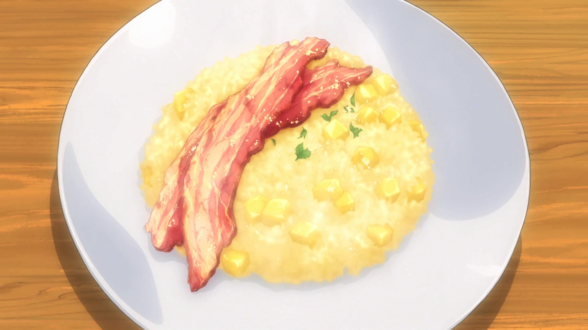

Home
Apple Risotto Recipe

Made by:

Soma Yukihira
Description
A wonderful classic Italian breakfast dish to rejuvenate the eater.
Ingredients
- 1/2 Apple
- 1 Teaspoon of Lemon Juice
- 1/4 Onion(Sauteed)
- 2 Tablespoons of Butter
- 1/2 Cup of Rice
- 2 Tablespoons of White Wine
- 1 Cup of Apple Juice
- 1 Cup of Water
- 1 Teaspoon of Granulated Consommé
- Salt
- Pepper
- Thick-cut Bacon
- Optional
- Black Pepper
- Powdered Cheese
Steps
- Cook the bacon in a frying pan until it's crispy and set to the side
- Peel the apple and dice it in cubes of 1cm³
- Mince the onion
- Heat the butter in a frying pan and sauté the onions
- Add the rice to (4) and cook until it's transparent
- Add the white wine to (5) and cook it until the alcohol burns off
- Mix the apple juice, water and consommé. Slowly add this 1/8 cup at a time to (6) simmering on low heat for 15 minutes (until all the liquid is absorbed)
- Add the apple dices and lemon juice to (7) and season it to taste with salt and pepper
- Place (8) on a plate and top it with (1)
- You can use black pepper or powdered cheese as topping